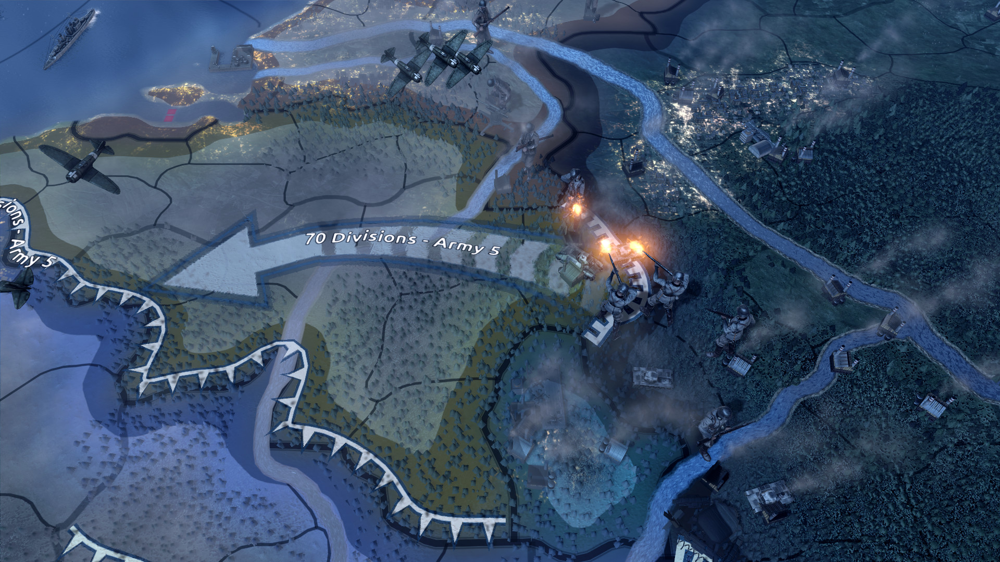

Hearts of Iron 4
Játékmenet
A játék alapja az a világtérkép, amely az országok területét egyrészt nagyobb ipari zónákra, másrészt ezeken belül még kisebb körzetekre bontja. Utóbbiakra azért van szükség, hogy a hadműveletek közben jusson elég tér akár több száz hadosztálynak is. Ezek a hadosztályok persze nem a semmiből teremnek, úgyhogy az állami apparátus, néhány törvény, és pár történelmi alak bevonásával fel kell húzni egy komoly hadiipari, logisztikai hátteret. Természetesen vannak kötelező nyersanyagok, no meg futószalagok, ahol új tankok, repülők és lövegek készülnek, de a játék egyszerű sémákkal és könnyen átlátható felületekkel segít átvergődni a gazdaság útvesztőin.Kevés az olaj? Állj át importra vagy építs szintetikus feldolgozókat! Az utolsó offenzíva totális kudarc volt, több száz tank veszett oda, és a gyalogság is kifogyott az utánpótlásból? Adsz némi többlet ipari kapacitást (már ha van) a páncélosgyártásra, és idővel stabilizálódik a helyzet – persze így az újgenerációs vadászgépekből készül majd kevesebb, de valamit valamiért. Eközben az évszámok alá sorjázott egyre jobb haditechnikákért is őrült fejlesztési verseny folyik. A sorozatban megszokott, hogy a háború végére datált páncélosok, U-bootok és bombázók már jóval korábban betallózhatók a kutatási ágazatba, csak őrült időbüntetésekkel járnak. Nehogy már valakinek Tigrise és atombombája legyen 1940-ben…

DLC-K
- Together for Victory
- Death or Dishonor
- Waking the Tiger
- Man the Guns
- La Résistance
- Battle for the Bosporus
- No Step Back
- By Blood Alone
Gold=Megvan nekem, értékelésem az 10/10